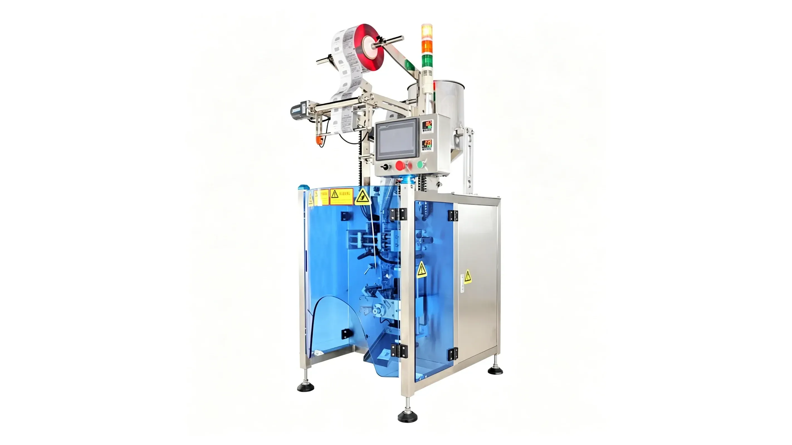

PE vs POF Shrink Film: How to Match Film with Packaging Machines
Compare PE and POF shrink film for industrial and retail packaging, and learn how film choice affects shrink wrapping machine configuration.

PE vs POF Shrink Film: How to Match Film with Packaging Machines
Choosing the right shrink film is just as important as choosing the wrapping machine. PE and POF films can both be used in shrink packaging, but they are usually selected for different product weights, package formats, and appearance requirements.
PE shrink film is commonly used for heavier industrial bundles such as bottled beverages, paint containers, aerosol cans, cartons, and building material packs. It offers strong holding force and is suitable for transport packaging where bundle stability matters most. Automatic shrink wrapping machines for PE film usually require stable sealing, controlled film tension, and a shrink tunnel with enough heating capacity for consistent results.
POF shrink film is often used when the package needs a cleaner retail appearance. It can be suitable for lighter products, boxed goods, cosmetics, pharmaceutical items, and consumer products where clarity and neat shrink performance are important. The machine configuration should match the film thickness, sealing temperature, conveyor speed, and product shape.
Before choosing PE or POF film, manufacturers should review pack weight, product dimensions, bundle count, desired appearance, storage conditions, and line speed. Packgenix helps customers match film type, sealing style, shrink tunnel size, and conveyor layout for reliable end-of-line packaging automation.